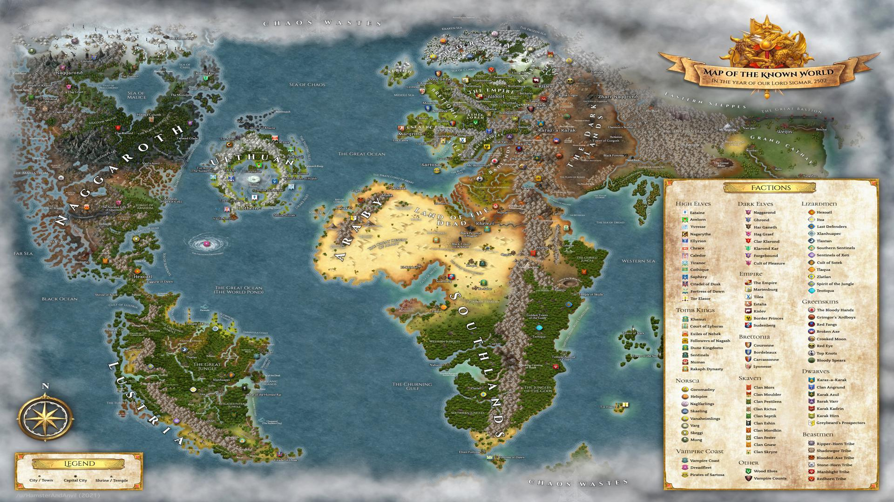
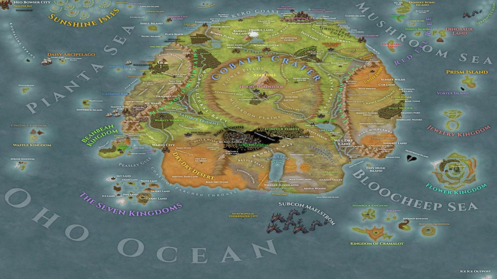
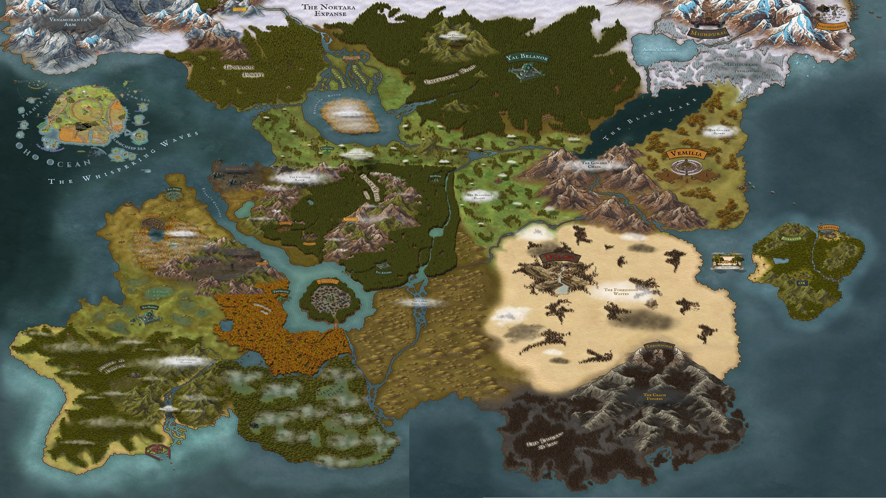
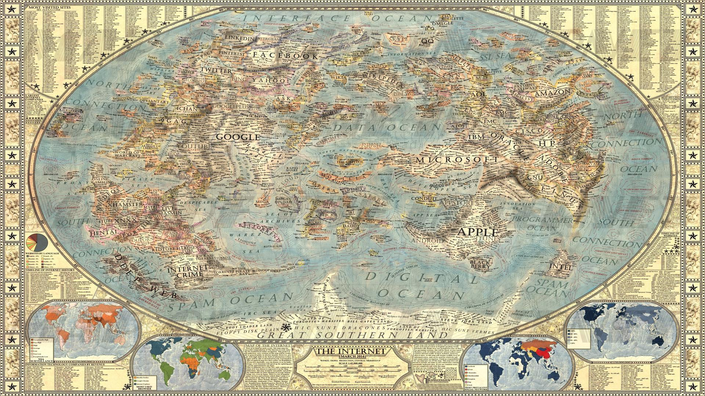
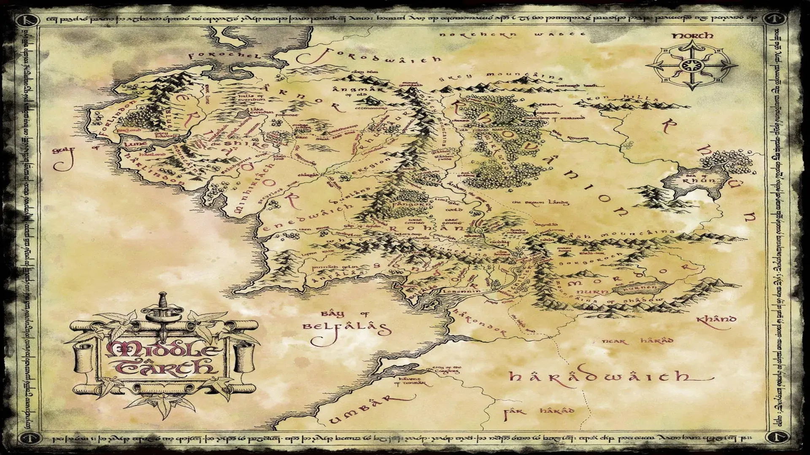
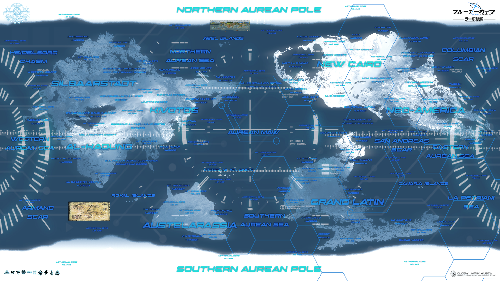

Select Tactical Region
Scroll through the available regions and select a map to view detailed tactical data.






The Fated Place
A grim world of perilous adventure, where mighty heroes battle the forces of Chaos and monstrous hordes threaten civilization.
Mushroom Kingdom & Adjacent Realms
View all maps related to the Mushroom Kingdom civil war and surrounding islands.
The Midlands
View maps of the fractured Midlands, including the conflict between the Onyx Hand and the Moonfang Pack.
The Internet
A digital realm of interconnected information, data tribes, and complex web-based governance.
Middle-earth
View the ancient kingdoms to the east of the Internet Federation, a land of tested alliances and fading magic.
Kivotos
A newly discovered Academy City to the west of Middle-earth, governed by a powerful student council and comprised of various feuding academies.